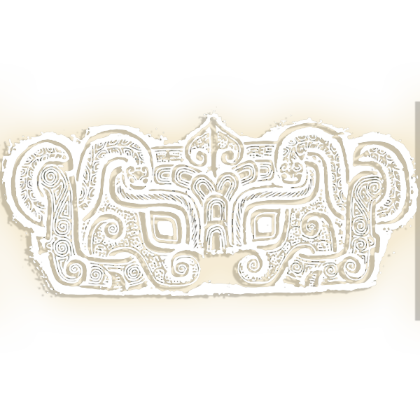

饕 餮 纹
为青铜器常见花纹之一，最早见于良渚文化的陶器和玉器上，盛行于商代至西周早期。饕餮(tāo tiè)是一种想象中的神秘怪兽，古人融合了自然界各种猛兽的特征。这种怪兽没有身体，只有一个大头和一个大嘴，十分贪吃，见到什么吃什么，由于吃的太多，最后被撑死。它是贪欲的象征。 饕餮纹一般以动物的面目形象出现，具有虫、鱼、鸟、兽等动物的特征，由目纹、鼻纹、眉纹、耳纹、口纹、角纹几个部分组成。面目结构较鲜明，也正是利用这些特征，将人们引到了一个神秘的艺术世界，商代的饕餮纹在吸引人们注意力方面是特别有效的。饕餮纹凶猛庄严，结构严谨，制作精巧，境界神秘，是青铜器装饰图案中最优秀的作品之一，代表了青铜器装饰图案的最高水平。